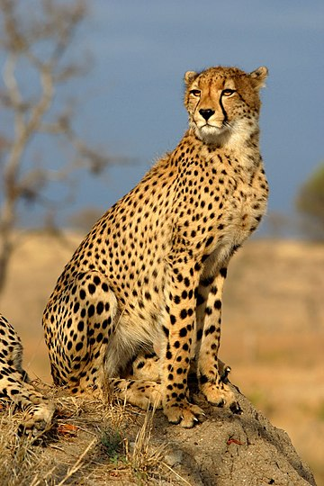
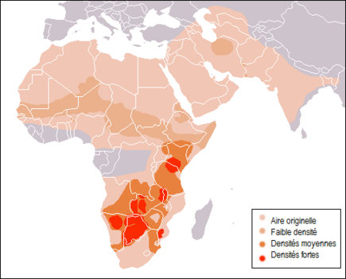

Les guépards, avec leur silhouette élancée et leur robe tachetée, incarnent la quintessence de la grâce et de la puissance dans le règne animal. Ces félins fascinants, souvent appelés les sprinters du monde sauvage, sont dotés de caractéristiques physiques uniques qui les distinguent parmi les prédateurs. Leur agilité exceptionnelle et leur vitesse époustouflante en font les chasseurs incontestés des vastes savanes et plaines d'Afrique.
Le guépard est le mammifère le plus rapide du monde. Sa colonne vertébrale souple et ses longues pattes lui permettent d’atteindre une vitesse de course très élevée. Le guépard est la seule espèce de félin dont les griffes dures et non pointues sont peu rétractiles.
L'habitat du guépard est une toile vivante déployée sur les vastes savanes, prairies et terres semi-désertiques d'Afrique. Ces félins magnifiques, arborant des taches caractéristiques pour se fondre dans la végétation, trouvent leur harmonie dans des paysages où l'herbe ondule sous la brise africaine. Le guépard est une créature adaptée à la course, et son habitat ouvert lui offre l'espace nécessaire pour déployer sa remarquable vitesse lors de la chasse. Cependant, l'histoire de l'habitat du guépard est également marquée par des défis contemporains. La fragmentation des terres, la perte d'habitat due à l'expansion humaine et les conflits avec les communautés locales présentent des menaces constantes pour ces magnifiques félins.
Acinonyx jubatus
Répartition géographique
